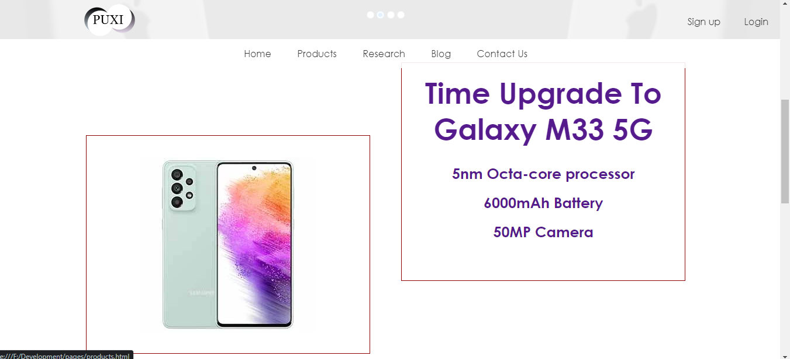
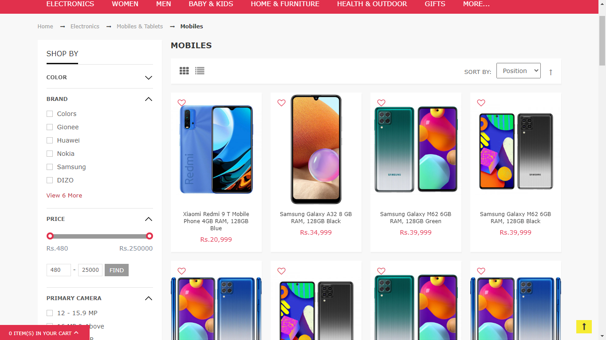

Huawei
The minimalistic look of the website seemed appropriate since its a website promoting devices. Therefore I wnated to implement a similar simple look in my website.
| Reference | Implementation |
|---|---|
Similarities
The text over the image-slider is similar in both the websites, and also a hyperlink button. The design aesthetics are similar too.
Differences
The references has side buttons on both sides of the image whereas this website only has radio buttons. The animation on the button for the automatic slider in the reference was unique.
MobileShop
This webpage looked very crowded at first glance. However the options drop-down when hovering on the products were neat and separated the selected products from the rest.
| Reference | Implementation |
|---|---|
Similarities
This website implemented a similar hover effect when hovering on the name of the product.
Differences
The reference changes the dimension of the division when it is hovered on but this website overlays a division on top of another.
Nokia
This webpage placed its content in different ratios. There were more videos with text above it. The hover effect on the product display is unique with the back part of the device sliding out.
| Reference | Implementation |
|---|---|
|  |
Similarities
The placement of the content in the webpage in the reference is implemented in this webpage.
Differeneces
In this webpage, the text appears if you hover on the box instead of being written on the side like in the reference. The box is used as a link to another page in this webpage whereas in the reference there is a button for the link.
Dealayo
The reference has a lot of flitering options for a more efficient product search.
| Reference | Implementation |
|---|---|
|  |
Similarities
This webpage implements the side navigation bar from the reference. The sidebars are used to navigate around the webpage.
Differences
There are no filtering options in this website. The navigation bars are using to navigation around the website. The top navigation bar navigations the pages while the side navigation bar navigations in the webpage.
Seth's Blog
The reference seems like a personal blog website. The side navigation bar with the blogs stacking on top with recent ones was different from the usual blog websites.
| Reference | Implementation |
|---|---|
Similarities
This webpage also took reference from the layout of Seth's Blog. Stacking the researches and then navigating it with a sidebar is similar to the reference.
Diferences
The difference is in the content.Adding on, the blog webpage of this website has a different layout from the reference.